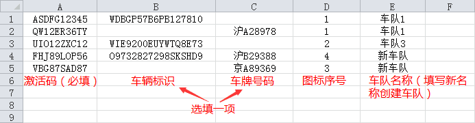
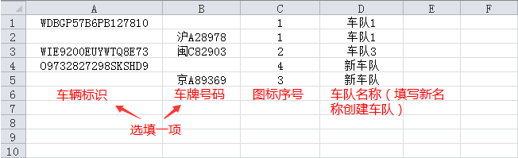

1.1 祺迹车辆管理系统有哪些功能
- 祺迹车辆管理系统提供包括：车队分级管理，车辆实时监控、活动回放等多项功能。
1.2 个人信息及数据是否安全
- 我们高度重视用户的个人信息安全，所有数据都进行复杂的加密处理；
- 同时我们也对数据进行了严密的防火墙保护，确保用户数据不会泄露。
1.3 设备中的SIM卡是否可以更换
- 设备内的SIM卡，一般不允许用户私自更换，如遇设备损坏等特殊情况请联系客服协助处理。
1.4 轨迹数据可以保存多长时间
- 设备采集的所有数据将自动备份至云端服务器，若用户持续使用并且没有出现更换设备等特殊情况，行驶记录将永久保存，以便用户查询。
1.5 为什么有时查看车辆实时位置有延时
- 设备向服务器发送数据及服务器收到数据之后的处理需要一定时间，故会有轻微延时。
- 若想尽快看到位置的更新，请点击打开“跟踪”功能。
1.6 为什么有时会缺少部分行驶轨迹
- 设备通过GPS进行定位，而GPS信号只能覆盖室外。当车辆离开地下室、车库等位置时GPS重新开始定位，需要一定的时间，这段时间内的行驶轨迹有可能会缺少。
2.1 客户端答疑
2.1.1 如何下载客户端
- 使用手机或电脑打开祺迹车管系统网页（www.qijigps.com），点击页面最上方或最下方的“下载应用”链接，扫描二维码或点击下载按钮进行下载并安装。
2.1.2 客户端无法登录，提示“网络连接失败”
- 首先确认您的手机已连接Wi-Fi或开启数据服务；
- 若手机能正常上网但无法登录祺迹车管客户端请联系客服。
2.1.3 是否可以同时在客户端查看集团中多辆车
- 在客户端中一次只能查看一辆车的相关信息，如需查看其它车辆，可在地图界面上方搜索框内搜索车辆进行切换，或在界面下方打开“车辆列表”选择切换车辆。
2.1.4 是否可以多个手机同时登录客户端
- 祺迹车管支持同一个帐号在多个客户端同时登录查看车辆信息。
2.1.5 如何下载离线地图
- 点击地图界面下方“更多”，选择“离线地图”，在“城市列表”中选择需要下载的城市地图。
2.1.6 如何删除已下载的离线地图
- 在“离线地图”的“下载管理”中，点击正在下载或已下载的地图，选择“删除地图”。
2.2 网页答疑
2.2.1 如何新建车队
- 点击页面左侧车辆列表中的集团或车队，在其右侧出现的按钮中点击新建车队按钮 ，在打开的对话框中填写车队名称后点击“新建”即可。
2.2.2 如何添加单个设备
- 可以在添加设备的同时创建新的车辆，或在已有的车辆上添加设备；
- 在页面左侧车辆列表中找到需要添加设备的车队并点击，在其右侧出现的按钮中点击添加设备按钮 ，在打开的对话框中选择添加方式为“单个添加”；
- 填写设备激活码、车辆标识、车牌号并保存。
- 至少需填写车辆标识或车牌号码其中之一。
- 一个帐号下的车辆标识和车牌号码均是唯一的，若添加设备时填写相同的车辆标识或车牌号码，设备将被绑定到相同车辆。
- 系统展示车辆时优先使用车牌号码，若用户未填写车牌号码则使用车辆标识。
2.2.3 如何批量添加设备
- 依照2.2.2描述的规则将设备信息按照以下模版保存至Excel文档中；
- 在添加设备对话框中选择添加方式为“批量添加”，点击“浏览”按钮，选择文件上传并确认。
- 例：

2.2.4 如何批量修改车辆信息
- 将需要修改的车辆信息按照以下模板保存至Excel文挡中；
- 点击页面左侧车辆列表中的集团，在其右侧出现的按钮中选择“批量修改”按钮 ，在打开的对话框中点击“浏览”按钮，选择文件上传并确认。
- 例：

2.2.5 车辆在左侧列表中为什么显示为不同的颜色
- 车辆颜色受安装的设备的状态影响，不同颜色代表设备的不同工作状态：
- 绿色——设备工作正常
- 灰色——设备离线，可能是设备异常离线或电量耗尽
- 异常离线：车辆所处位置有信号屏蔽或移动网络信号过弱，造成设备因无法通讯而异常离线。
- 电量耗尽：设备与车辆电源没有正常连接，导致设备因电量过低而离线。
- 红色——紧急状态，设备可自动进入或被标记为此状态
- 设备ZJ210被拔出时自动进入紧急状态，提醒用户若不及时连接电源，设备将会离线。
- 配对安装的设备ZJ211若离开配对的ZJ210超过一定范围，自动进入紧急状态，提醒用户设备可能被拆除。
- 发现车辆异常时，用户可点击紧急模式按钮使单独安装的设备ZJ211进入紧急状态。
- 设备ZJ211进入紧急状态后将被唤醒，用户可以通过跟踪功能更快地获取车辆当前行驶轨迹。
- 橙色——设备处于待紧急状态
- 单独安装的设备ZJ211在进入紧急模式之前需要一段时间等待唤醒，此时设备处于待紧急模式。
2.2.6 如何删除车队
- 将需要删除的车队中所有车辆拖动到其它车队；
- 点击待删除车队，在其右侧出现的按钮中点击删除按钮 ，并确认删除。
2.2.7 是否能同时查询多个辆车的活动路线
- 活动回放仅支持对单个车辆进行查询，不支持同时查询多个车辆的活动路线。
2.2.8 如何在地图上同时显示多个车辆的位置
- 在页面左侧车辆列表中勾选的车辆将同时显示在地图上。
2.2.9 如何修改密码
- 点击页面右上角用户名称，在下拉菜单中选择“修改密码“。
2.2.10 忘记密码怎么办
- 可在登录页面点击“忘记密码”链接重设密码。
- 也可联系客服进行重置。
3.1 设备红灯双闪
- 请检查SIM卡是否插好；
- 若SIM卡已插好，请将设备内部开关拨至OFF后再次拨至ON。
3.2 设备异常离线
- 请检查车辆当前位置的移动网络信号强度，若信号过弱，可能造成设备因无法通讯而离线。请尝试将车辆转移至GSM信号较强的区域，或联系客服协助处理。
- 设备若置于金属材质的密闭空间会影响GPS信号接收，请移除金属遮挡物或更换安装位置。
3.3 首次使用定位比较慢
- 首次使用时，请将定位器置于较空旷的区域开机，并等待3分钟再进行定位。
3.4 位置不准确或不更新
- 如果设备位于室内（如车库、地下停车场），或位于屏蔽GPS信号的区域（如军区附近），均可能无法定位。请将车辆转移至GPS信号覆盖的区域。
- GPS定位精度为5-50米，可能存在一定误差，仅作参考。
4.1 设备保修期为多久
- 祺迹车管支持7天包退，15天包换，1年包修的三包服务。
4.2 如何返修设备
- 在一年保修期内的设备，邮寄费用双方各自承担；
- 超过一年保修期的设备，由用户承担。
- 邮寄包裹内请附故障原因及配件清单的详细说明。
4.3 发现车辆被盗怎么办
- 首先在网页或手机客户端登录自己的帐号，查看车辆所处的位置；
- 立即拨打当地的110联系警察，协助警察找车；
- 联系我们的客服寻求支援。